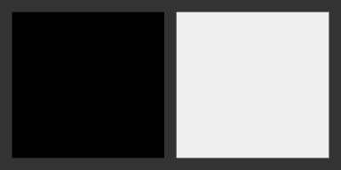
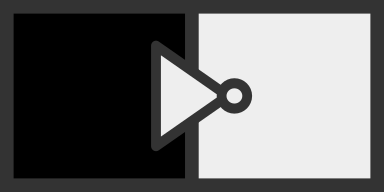
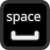
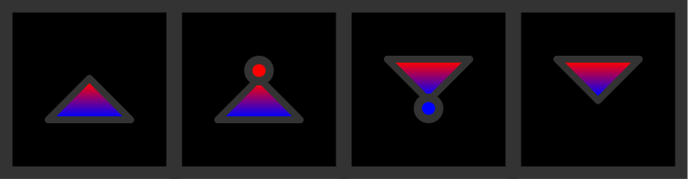
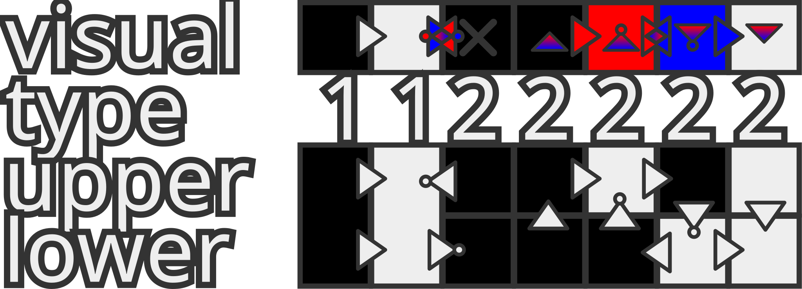

Welcome To OrCells, The simple but complicated, Turing complete digital logic simulator!
Index:
Phase 1
- Basics
- Forcing
- Connecting/Disconnecting
- Ticks
Phase 2
- Layers
- Type 2 cells
- Splitting/Merging
- Applicital Connections
- Summary

Basics
You start with a blank grid called a board, which is made
from squares called cells.
It looks
like this:

To move around a board, hold either or , then click and drag. Scroll to zoom.
Type 1 Cells have one property which is called its bit, which can be on (cell is white) or off (cell is black):

Forcing
To set the bit of a cell to on, hover over it and press: . To
set the bit to off press: .
This is called forcing.
When
forcing a
cell, its bit will always stay in the state you force it while that key is held down.
Note that most actions will continue happening when the button is held down and then
you move the cursor
around.
There is no need to let go and
press again between cells when forcing or connecting/disconnecting so you can drag.
Connecting/Disconnecting
Connections are used to link cells together to make
them interact with each other.
they send an output
which is on or off
to the
cell it's pointing to, based on the state of the cell it
points from as the input.
In the case of buffers, this output will match the bit of the input cell.
Meaning buffers essentially link
cells in a chain that signals can travel along.
In the case of nots, this output will be the opposite to the bit of the input cell.
To create a
buffer, hold left
click and drag over the grid line between two cells in
the direction you want to make the connection.
buffers
look like this:
To create a not, it's the same as creating a buffer but instead
of left click, use right click.
Nots look like this:

To remove a connection, hold middle click, or and then drag between two cells in the same way as creating a connection.
Ticks
Every tick, all cells that have inputs, will have the bit on if any of those inputs are
on, otherwise if all
inputs
are off, it will be off.
Here is an example of cells connected in a loop with a
signal going around the loop:

If a cell has no inputs, then it is static and it will not change unless you act on it.
To Pause/Play the simulation, press:

, or press the button that looks like one of these:To step forward once by performing one tick, press: , or pressing the button that looks like this:
To set the tick rate in ticks per second when in consistent mode, use the control that looks like this:
You can also adjust it using the arrow keys and you can jump to the number text box by pressing: .
If instead of a constant tick rate in consistent mode,
you want to run ticks as fast as possible use realtime mode.
To toggle between realtime mode and consistent mode, press: or use the check box that looks like this:

Phase 2 adds on support for a second layer to OrCells, allowing for much more complex technology to be built in a smaller space and much easier.
Layers
The top layer is linked with the colour red and the bottom layer is linked with blue.
To interact with only the top layer hold the upper modifier key: . The lower
modifier key is:
These modifiers apply to most actions such as forcing and connecting as well as their inverse actions.
Type 2 cells
Type 2 cells act as two separate type 1 cells stacked on top of
each other.
This means they have a top cell and bottom cell which can have a different bit, interact with each
other and with other cells around them.
The two bits of a type 2 cell's subcells determines the
colour of the whole cell.
The cell will be black if both subcells' bits are off, red if only the top is on, blue if only the bottom is on and
white if both are on:
If the two subcells of a type 2 cell aren't connected to each other, the cell will have a cross in the centre like above.
Splitting/Merging
Splitting is an action that converts a type 1 cell into a type 2 cell while merging is its inverse action.
To
split a type 1 cell, hover over it and press: . To merge
press: .
Applicital connections
Applicital is an invented word which refers to the axis that goes from above to below, perpendicular to horizontal and vertical.
An applicital connection is a connection that goes between the two subcells of a type 2 cell from top to bottom or bottom to top.
They look like this:

To create an applicital connection, hold down the
modifier key of the desired connection's output layer and left click the cell to make a buffer or right click it make a not.
To remove one, middle click the cell or hover over it and then press either: or .
Summary
Diagram of different cells, connections, the cells' types, their visual appearance and what is going on on the two layers:

Play OrCells
Close this window